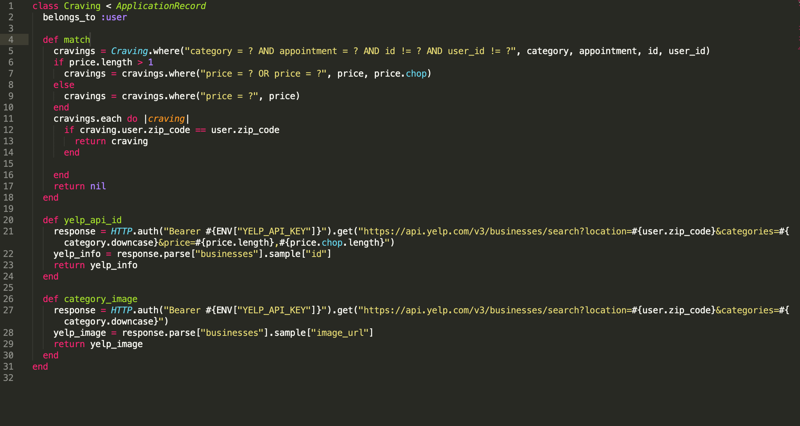

My Work
Completed the 4-month, intensive Online Live Actualize Coding Bootcamp. Learned Ruby, Rails, JavaScript, Vue.js and how to think like a software engineer. Constrcuted over 15 different projects and apps. Gained the ability to tackle any new technology.

Eat Together App (Backend)
A social eat-together app which will find the perfect eating companion based on location, schedule, and
preferences entered by the user so that they don’t have to eat alone. This is the backend portion of the
app which uses Ruby, Rails, REST APIs, and third-party APIs.
Eat Together App (Frontend)
A social eat-together app which will find the perfect eating companion based on location, schedule, and
preferences entered by the user so that they don’t have to eat alone. This is the frontend portion of the
app which uses JavaScript, Vue.js framework, HTML, CSS, Bootstrap Theme, and third-party APIs.

Eat Together Presentation Video Clip
Presented my Eat Together app in front of my Actualize cohort, instructor and a panel of professional web developers.
Mini Capstone App (Backend)
An in class project where we created an app that can display products and allow users to order and buy the
prodcuts. This is the backend portion of the app which uses Ruby, Rails, and RESTful routes.

Movie App (Frontend)
An in class project where we created an app that can display actors with their associated movies that they are famous for. This is the frontend portion of the app which uses JavaScript, Vue.js framework, and HTML.
Contacts App
Created an app that can store and categorize contact information for a user. I only worked on the backend
which comprised of Ruby, Rails, and RESTful Routes.